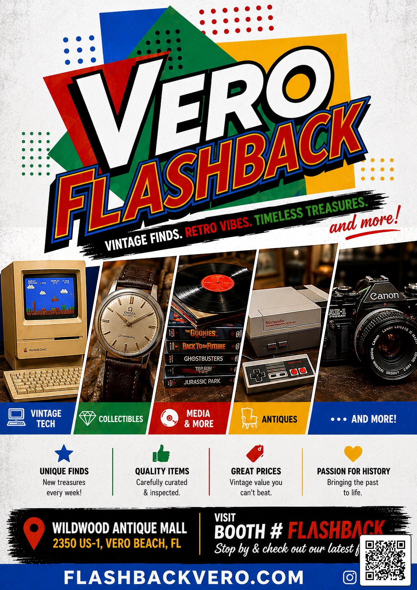

Clear product-style images help show condition, shape, color, and the details collectors care about.
 Back Home
Back Home
Media & More
Photos, printed pieces, videos, and collectible media gathered for browsing, storytelling, and future updates.

Cards, labels, packaging, flyers, and paper details often carry the strongest era-specific personality.
Short clips can show scale, texture, and movement when a still photo does not tell the whole story.
Vero Flashback Flyer
Updated print piece with the original logo, booth information, website, and a scannable QR code for fast visits.
